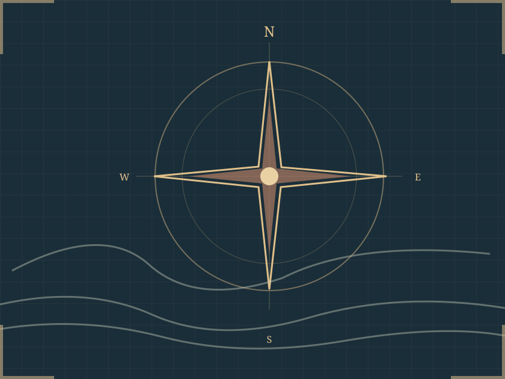

장소를 탐험하다
수영의 곳곳을 돌아다니며 작은 단서와 숨겨진 이야기를 발견하세요.
전란의 바다, 역사가 기록되기 전의 이야기. 이순신과 함께 단서를 찾고, 사람들과 대화하고, 퍼즐을 풀어 1592년의 조선으로 들어가세요.
〈한산: 난중일기〉는 임진왜란을 배경으로, 조선 수군의 이야기를 고전 어드벤처의 방식으로 풀어낸 픽셀 아트 게임입니다.
길을 찾고, 기록을 살피고, 사람들의 속내를 들어보세요. 작지만 중요한 선택과 번뜩이는 아이템 조합이 다음 이야기를 열어갑니다. 실제 역사에서 영감을 받았으며, 게임 속 일부 대화와 사건은 창작되었습니다.

한산은 복잡한 조작 대신 호기심과 관찰, 그리고 대화로 진행하는 이야기 중심 어드벤처입니다.
수영의 곳곳을 돌아다니며 작은 단서와 숨겨진 이야기를 발견하세요.
각자 사연을 지닌 사람들과 만나, 대화를 통해 다음 단서를 찾아보세요.
익숙한 물건도 다르게 바라보세요. 관찰과 조합에서 해결책이 나옵니다.
실제 게임 플레이 장면과 오프닝을 이곳에 소개합니다. 이미지와 영상은 파일을 추가하면 자동으로 표시됩니다.
* 현재 스크린샷은 업로드 전입니다. 영화 포스터나 영화 스틸컷은 사용하지 않았습니다.
오프닝 영상을 이 공간에서 감상할 수 있도록 준비했습니다. 직접 제작한 MP4 파일을 추가하면 영상 플레이어가 자동으로 나타납니다.
개발 진행 상황과 출시 소식을 이곳에서 전합니다.
웹 브라우저에서 〈한산: 난중일기〉의 데모를 플레이할 수 있습니다. 스토브 상점 등록은 심사 중이며, 출시 일정은 확정되는 대로 안내합니다.
퍼즐의 난이도, 대사와 번역, 첫인상과 버그까지. 어떤 의견이든 개발에 도움이 됩니다. 무료 데모를 경험해보고 이야기를 들려주세요.
* 피드백은 GitHub Issues로 연결되며, GitHub 계정이 필요합니다. 게시 전 Issues 활성화 여부를 확인해주세요.